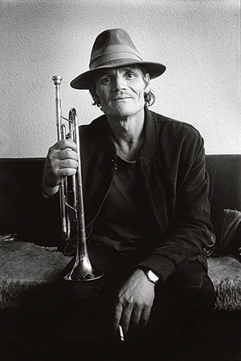
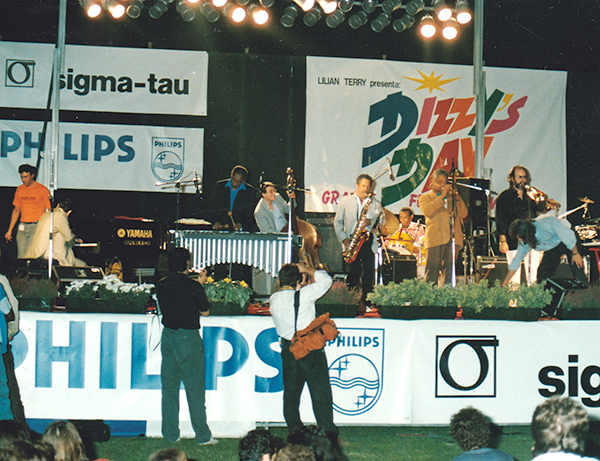

1 May 2021 by Lilian Terry
Having reached my 90th year of age, I look back at 70 years of activity in the world of jazz music and realize my extraordinary good fortune in having lived and worked with historical artists who - through all the many years - have accepted, befriended and given me their trust. Iconic names who shared aspects of their lives with me, and through so very many years. I had not considered it as my "job" but rather an essential meaning of my life, and they had understood, and therefore opened their doors and let me in.
Today I own a large collection of recorded interviews where the artists had felt free to discuss all subjects of interest to them: from music to politics, to religion and private family life. Alas, many of them have left us. Therefore - being on my own way out - I feel that I owe it to them and to their public, that they should be appreciated not only for their artistic worth but also for their private, human way of being; which I am able to share with our readers.
My first step was to obtain publication, by the University of Illinois Press, of the book, Dizzy, Duke, Brother Ray and Friends, where I offered a series of personal portraits of the following artists: Duke Ellington, Abbey Lincoln, Max Roach, Horace Silver, Ray Charles, Bill Evans and Dizzy Gillespie.
To this list I shall also add other historic musicians: starting alphabetically with Louis Armstrong, Chet Baker, Count Basie, Tony Bennett, Dave Brubeck, Ornette Coleman, Ella Fitzgerald, Errol Garner and on to Sonny Rollins, and finally to Mal Waldron. Over 25 artists in all.
From the early Fifties we, devoted jazz fans in Italy, had enjoyed the visits of Satchmo who had become a beloved friend whom we would welcome at Ciampino airport - or at the Rome railway station - with the Roman New Orleans Jazz Band playing noisily “When the Saints come marching in”, to his roaring, laughing delight.
Please bear in mind that during the war years of Fascism, in the Thirties and Forties, when jazz music had been forbidden in Italy - considered as "music for savages" - still the national radio would play the "Malinconie di San Luigi" by Luigi Braccioforte. Yes, Luigi was an essential part of our musical world; especially later in the Fifties when Jazz was considered an elite form of music in Italy, usually reserved for passionate followers. But our joyful artist was an irresistible leader and, gradually through the years, his performances, whether in large Italian theatres, exclusive jazz clubs or on the national radio airwaves, were a constant and growing success. Invited as Guest Star at an International Pop Song Festival at San Remo he had appeared on stage, to sing in Italian:
"Ciao! Stasera son qui..." with an impossible accent that had delighted the pop oriented Italian public.
Our last meeting had taken place on the French Riviera, in the late Sixties, during a Jazz Festival at Antibes/Juan-les-Pins. We had lunched together at the beach - where he had enjoyed eyeing the ladies in their bikinis - while chatting and remembering the various occasions of our meetings, especially in Rome, through all those many years.
He had agreed to give an impromptu interview for my colleagues of the Italian National Television on condition that I assist him as his ‘personal interpreter’. We were filming, standing by the door of the Provencal Hotel in Juan-les-Pins, while waiting for the limo that would drive him to the Nice airport. Between one question and an answer; he would wiggle his eyebrows naughtily at my beach hot-pants while asking news of his musician friends in Rome. How was Nunzio Rotondo? And Carletto Loffredo and his mother..? Had she met the Pope yet? And Romano Mussolini, always dating Sofia Loren's sister Maria? Hah, lucky man! His laughter and roaring voice made the passers-by stop and smile, waving at him.
When the limo had arrived to drive him to the airport we had moved down the steps, had embraced primly then he had waved at the Italian TV camera and said, rolling his eyes, “Ciaaao! Arrivederci Romaaaa! ”.
Once seated inside the car, he had rolled down the glass window - while the Italian TV operator kept recording - and had called out to me.
“Hey, Lilian?"
"Yes?"
"Are you driving back to Rome?”
“Yes, tomorrow.”
“Listen girl, now don’t you be like them Roman drivers, now you be very careful. Hear me?”
“Yes, boss!” I had saluted.
“... 'cause we don’t want nothing to happen to them hot pants, right?! Hah! Hah!”
And he had sat back, laughing, leaving me to wave as the car drove away.
Ah, yes. Louis Armstrong, a joyous, wise human being, laughing at life and accepting all aspects of his destiny, which he lived to the full. He was truly a force of nature and a great teacher for us all.
At the 1959 First International Jazz Festival - organised by Joe Napoli in Comblain la Tour in Belgium - Romano Mussolini and I were to perform accompanied by excellent Belgian musicians but the main star of the Festival was Chet Baker; who wandered about like a ghost, followed by his wife Halima carrying a lovely baby.
, via Wikimedia Commons">We had struck an acquaintance during his previous visit to Italy and he seemed glad to see us again. After spending some time in Belgium, Chet had then decided to settle in Italy for a longer period; spending most of the time between Rome and various Italian jails, due to his drug habits. It was also murmured that he could not return to the United States for ‘safety and health’ reasons, regarding both the American Law Enforcers as well as the Lawless.
His hotel being close to my house in the Parioli section of Rome, from time to time I would join his group, made up of European musicians. Belgian saxophonist-pharmacist Jacques Pelzer was there, (always sporting his black pharmaceutical carry-on case); there was also Belgian guitarist René Thomas, plus some Italian musician friends of mine.
Unfortunately, it was obvious they were all dabbling in Chet’s drug habits, although they were discreet in my presence, well knowing my disapproval.
Whenever we would get together, sitting mostly in the restaurant of their hotel, Chet and I would end up singing favourite songs in duet. Until one day he suggested that we speak to our respective labels to see about recording an LP together. Why not? To prove he was serious he had begun writing down a list of possible songs.
We had approached our respective companies who were surprised and doubtful at first, well knowing Chet's reputation, but the idea seemed curious enough to be interesting and finally they had both given us the go ahead.
On the day before the studio rehearsals we met at the hotel to define the repertoire. Chet invited me up to their room where Jacques, very business-like, was opening his black doctor carry-on case. Chet had smiled at me, explaining:
“Here Lilian, you can choose…we have pills, grass, hash, coke, whatever?”
I had frozen in disbelief, unable to speak. Shaking my head I had looked away, embarrassed and disappointed, searching for the words.
“Chet, you know I’ve never been interested in any of it, not at all...”
He had stopped me: “But Lilian, if you’re not one of us on this," he pointed to the black case "then how can we work together with the music? You do understand? You must… I mean…you’ve got to…”
Shaking my head, speechless at that point, I had stopped him then had walked out, shutting the door quietly behind me. That had been the end of my very brief recording project with Chet Baker.
I got over my upset, eventually, as I remembered his telling me, candidly, that he had started at age 10 by smoking the reefers his parents left in plain sight, and he had assured me he could stop anytime, and had done so many times before. I realized that he was a very sick man and, after that day, when he was in Rome, he would still come to lunch at my house with common friends, between police arrests. We never mentioned our vocal project again.
As I write these lines I have underhand my favourite LP of his: “Chet Baker sings and plays with Bud Shank, Russ Freeman and strings” and on the front cover I read, in his precise and attractive handwriting:
“Best wishes and many thanks Lilian – see you in Milano” and the date was 1959.
He was an excellent artist but he lived the latter part of his life like a painful sentence he wished to put an end to. The last time we saw him was at Pepito's Music Inn in Rome, some time before his tragic plunge from that hotel window in Amsterdam. He had lost his bite and his lip, and he whispered his songs. He had become a scorched, errant soul, leaving us helpless to come to his aid. The mystery of his death was never really dispelled and yet did not surprise us, sadly. Today we listen to him on the radio airwaves and it’s always poignant to hear his voice singing… "My funny Valentine.", "I get along without you very well.", "When your lover has gone.", "You don’t know what love is… "
Chet Baker. His was a tragic, wasted, destiny and somehow a loss for us all.
(+ Abbey & Gillespo)
As far back as one can remember, Big Bands have always been the backbone of the Jazz Magic; from the very early Dixieland days, through the Prohibition Charleston years, the dancing Swing evolution, the surprising Be-bop Revolution and on into various forms of experimental 'avant-garde' music. The list of important orchestras that have marked the history of Jazz is wonderfully long. If the first name that comes to mind is magical Duke Ellington, inevitably the second is Count Basie with his special trademark: that slow but gripping, swaying, swinging, performance that could turn all his listeners into dancers.
My meeting with Count Basie took place on 11 February 1967 at the Teatro Sistina in Rome. The theatre had been over-packed with enthusiastic Basie fans, all eager to surrender to the magic of that orchestra. Unfortunately, something peculiar happened on that occasion needing an explanation.
During that European tour the orchestra had been offering a special attraction by the addition of singer Tony Bennett, with whom they had already conquered the American public, especially in Las Vegas. The European organisers, however, had not taken into consideration the fact that in 1967 Tony Bennett was practically unknown to the Italian public. Therefore - and unfortunately - they had not only omitted any previous press publicity to prepare the general public for the inclusion of an unknown singer within the big band programme, but they had also omitted printing the full name “Tony Bennett” on the posters. They had stuck a coy message on the lower left hand corner of the said poster which read “and Tony.” The Italian public had no idea who ‘Tony’ was - nor cared - for all they wanted was the music of the Count Basie orchestra.
The first part of the concert had unfolded extremely well, with the band performing at full strength. Then the curtain had opened on the second part and… totally unannounced, an unknown young man had appeared on stage with a microphone in hand, followed by an unknown pianist replacing Basie. The singer had started singing a soft, totally unknown, non-Basie repertoire song…
The first part of the concert had unfolded extremely well, with the orchestra performing at full strength. Then the curtain had opened on the second part and… totally unannounced, an unknown young man had appeared on stage with a microphone in hand, followed by an unknown pianist replacing Basie. The singer had started singing a softer, totally unknown, non-Basie repertoire song…
What on earth? Who was this? Where was Count Basie?
The initial surprise was strong enough for the public to accept the first song calmly, with curiosity. By the second tune, another ballad, a low groan had started brewing. When the third song had begun, they had erupted in repeated cries of “Enough! We-want-Basie!” Needless to say that was the end of a very brief vocal interlude and, when Basie had returned with the orchestra bursting out with one of its swinging successes, the public was satisfied and enjoying the concert once more.
At that time my radio Jazz programme was dedicated to Big Bands and we were studying the special, unique, slow-swinging nature of the Basie sound. So there I was backstage interviewing Count Basie who was his usual smiling, charming, self. Of course we omitted all reference to the flop of his “Tony”.
I began by wishing that he played more piano solos within the band, as in that extraordinary version of ‘The Kid from Red Bank’ where his mastery of a special merging of ragtime, stride and even boogie had left his listeners breathless. He had given me a pleasantly surprised smile then had thanked me, nodding. Now I could begin the interview.
There are two codas to this story, the first relating to Count Basie’s funeral. As described in my book with UIP, at that time I had been Abbey Lincoln’s guest at her home in Harlem. Calling Dizzy Gillespie on the phone we had made a date for the religious ceremony taking place the next day. We would meet him at the Abyssinian Church in Harlem and, after the funeral; Dizzy would come to Abbey’s home for his special Italian lunch.
Upon arriving at the church Dizzy had been immediately grabbed and ushered inside. Considering the huge crowd trying to enter the church Abbey had chosen that we join the many other fans and friends, in a bar just across from the Abyssinian Church, where we would honour Bill Basie’s memory.
Finally Dizzy, Abbey and I were “taking our shoes off” at her home and - while Abbey set the table and I went into the kitchen to prepare his pasta delight - Dizzy had sat at the piano to play and sing a series of romantic ballads most efficiently, and with great feeling... Quite a revelation!
The second coda to the Basie story will bring us back to the Basie concert in Rome.
The second coda to the Basie story develops in three parts. Just before the interview with Basie, after his concert in Rome, I had been introduced to Tony Bennett and I had complimented him on his career while I felt he needed an explanation for the public’s rejection of his presence on stage that evening.
“You know, the Italian jazz public is more oriented towards big bands, rather than solo singers. In your case, you had two strikes against you. First of all, the public had not been informed that there would also be a singer, so they considered you were intruding somehow… Wait, let me explain further. The poster with the small “and Tony” in a corner would probably bring enthusiastic fans of yours to Las Vegas; but here, in Italy, it had no meaning at all. Your records are unknown.”
“So my name …?” He had asked and I had nodded, answering:
“…is practically unknown to the general Italian public."
He had shaken his head, surprised: “I had no idea…Now you let me have your address and I’ll make sure that you get a good selection of my latest records.”
“That would be very good of you. By the way, there is one song you sang tonight that I had never heard before; it has beautiful lyrics that start with ‘Days of love’.”
“Ah, yes, that’s one of my favourites: I’ll make sure they send you that one.”
We had made an appointment for the next day, when I would show him a Roman’s Rome. During our sightseeing we had enjoyed talking about music, food and his Italian origins as he proudly re-introduced himself as ‘Antonio Benedetto’. We had discussed the great singing artists who had influenced our careers; totally in agreement with the unique personality of Frank Sinatra. Then we were comparing our private lives. He was divorced and had two sons. I was divorced and had one son. He had a girlfriend called Sandy and a sister called Mary. My sister was called Mary as well! Ah, well then, we were family!
From our meeting at that hapless Roman concert there came to life a familiar relationship between us that lasted through many years. When Tony had heard that I would be spending the 1967 Christmas holidays in New York he had given me his address, promising me an unforgettable holiday, and so it had been. He had decided I was to enjoy ‘his New York’ and he practically drew me in a whirlwind of Studio Christmas Parties taking place in the most famous recording studios, starting with historic and charming Phil Ramone.
I remember being introduced to one of my favourite American composers. Having no previous idea of his features, when we were shaking hands I had stared at him in amazed admiration, exclaiming:
“Good heavens! I had no idea that the great Burt Bacharach was also such a handsome man! The Gods have really been kind to you!”
Surprised, he had laughed out, and then had planted two kisses on my cheeks, exclaiming: “And a very merry Christmas to you!”
I do have a very warm memory of that Christmas. I recall that musical evening at Tony’s home where I met a number of artists, in an atmosphere that was definitely Happy Holidays. I remember meeting the one artist who had enchanted my childhood, influencing my desire to become a singer. And now, there she stood by the piano, right next to me, singing “Over the rainbow.” I had touched her arm lightly, and she had smiled back. Judy Garland.
The other parts of this story will be featured in the next book.
When a director of RAI TV had informed me that the concert of the Dave Brubeck Quartet would be broadcast, live, on the 6th of October 1959, I had recommended that the announcer be able to pronounce correctly the names of the musicians and the titles of the songs; and perhaps ask Brubeck some questions of interest to the public. The director had pointed at me: “Then you do it!” Why not?
Meeting the artist on the day before the concert, I had discovered a charming, amusing gentleman, and the next evening the radio programme had opened with a friendly interview regarding the Brubeck Quartet and its historical place in the development of modern jazz. There had followed an excellent performance with a very attentive public.
The experiment of introducing live Jazz over the radio network had been a success, thus launching a new aspect of my career. From being a jazz singer, I had become a RAI expert in jazz culture and all thanks to Dave Brubeck.
The next day we had visited the Coliseum, the famous opera theatre at the Baths of Caracalla and, as a last “ancient Roman” treat, we had lunched at a well-known restaurant on the Old Appian Way.
Thus began my friendship with Dave Brubeck and when, a few years later in July 1967, we had met at the famous Jazz Festival of Antibes/Juan-les-Pins on the French Riviera, he had been relaxed and ready for me to tape our conversation.
“Dave, this interview is for my radio programme dedicated to jazz orchestras. Now, what do you think of big bands?”
“Well, I’ve always loved the power of big bands. I had a big band when I was in college…”
“When was this?"
“1940-1941. Why, the first time my wife saw me, I had a big band!”
“I see, and did you have any musicians who later became important?”
“Ah…I would say that my 1946 Octet had maybe some of the most important musicians I can think of: Paul Desmond, Cal Tjader, Dick Collins, and…ah, yes; an Italian audience will know one of my favourite musicians, Bill Smith. He’s very important within the avant-garde in the United States, you know? ”
“Bill Smith? Oh yes, we know him very well! He’s living in Rome right now!”
“Yes. Now five of the eight musicians of the Octet were composition students of Darius Milhaud. And out of eight people everybody could compose and arrange and all played their instruments very well.”
“And did you make any records?”
“We only made a few. We did make an LP that’s still available, on Fantasy records. It's called “The Dave Brubeck Octet." In ‘46 it was recorded, but it was released in 1949 when some new things were added.”
“They say that times are very hard for jazz musicians right now… But you said that, back then, times were really hard. Can you make a parallel?”
“Well, what’s beautiful about it is that if anybody is absolutely determined to make complete, total, sacrifice – not cry-baby sacrifice, – but where you exist on nothing, simply so that eventually your art will have an audience… it was tough then and it is tough now. We were able to make this sacrifice and be happy; but this generation can’t be happy making any sacrifice. When people say “Well, look, you were recorded” my answer is “Yes, why don’t you start your own record company too?” When we started, no label in the United States would take my records, so we started our own company. And we made jazz become popular again, acceptable. Our company, starting in San Francisco, called Fantasy records, with no distribution, nothing, yet could survive. We started selling records internationally from a place you could call a ‘hole in the wall’.”
“And who was the mind behind all this... was it you?”
“Ah, I think so, and my wife. We went to a place that pressed records and we became partners with them. All they did, really, was make Chinese Opera! In San Francisco! (We laugh) And we talked them into making Jazz; and the Dave Brubeck Octet and Trio, and Quartet, all started from there. We were partners. They paid all the expenses of producing the records, I furnished the musicians and I paid the studio. And it usually worked out even. Then if there was any profit, we shared.”
“I see. Very interesting, and what do you think is needed in the jazz scene today?”
“I think that the first big band that comes along with the imagination to capture what would be acceptable to the audience would have a tremendous success. I predict it will be Don Ellis. He’s going to break through."
"Yes, I like him very much, although his music is not easy to follow by everyone."
"Now our group was a challenge to the musicians themselves and yet we were able to reach the public. At first people thought we were crazy with the Octet because we were so avant-garde there was nothing else to compare us to. But we were able to get an audience. This is the kind of thing we were doing.”
It was time for our "apéritif" and a pause.
She was unique. First of all as a singer, with that clever use of her voice, tender as velvet or sharp, scatting or lyrical, and always humorous, inventing. Each surprising performance was singular; always offering a new, unexpected aspect of each song. She was unique also as a human being, open, generous, forgiving; facing life with a keen sense of humour. She was a teacher-mother to the many young musicians fortunate enough to work with her. She was Lillie Mae Jones aka Betty Carter.
We had met at a Jazz Festival in Sicily where I had flown down from Rome to interview her for my National Radio Programme. She had been surprised and flattered to hear it and before long we were discussing, laughing and agreeing on various facts of life, as if sharing an ancient friendship. We discovered mutual basic points of view regarding the art of singing, although I confessed I would never have her spirit of innovation.
Another link between us was our desire to open the magic doors of jazz music to all young people who wished to study our music. I had inaugurated my “Dizzy Gillespie Popular School of Music” in Bassano del Grappa, with Dizzy’s active blessing, in 1982. When Betty had come for a concert I had organised for her in 1985 she had congratulated me, wishing our school all the luck possible. One day she asked me about the series of “concert-conferences” I would hold in a series of high schools, illustrating with my musicians the history of Jazz music. The title of the paper I handed her was “Jazz is Universal” and she read it with an approving smile. Here it is:
“It began from the first, repeated, moan bursting out of the chest of a Slave in a North American cotton field, forming within his soul a sobbing outlet; leaning on a spontaneous, repeated rhythm tied to his repetitious work in the field… “Oh Lord, have mercy on me.” The Master decided he would save his Slave’s soul –no, not free his body, just his soul – therefore he should learn the prayers of the White Congregation, the Gospel, even if he did not really understand English enough. Just repeat what you catch being sung inside the church, while you are grouped outside it. The Gospel makes sense to the Master, as he sings it; so now repeat the same words and notes as best you can remember…Any void spaces you can fill up instinctively with a beat of the feet, and the moaning words can rise and fall in an Afro-European mixture of music and cadenzas.
Yes, that’s acceptable and even enjoyed by the Master. They will become eventually known as “work-songs”, ”gospel chants”, and then the Master will decide to play them on his own instruments, enrolling the help of his Slaves whom he will have educated in music, for his own entertainment and that of his white guests.
Thus a Black-American music was born; taken out of the slave quarters, part of it into the Church choir, and part into the mansion’s more sophisticated music room, where a properly trained Slave played the piano and sang. Somebody mentioned it as “all that jass”. Today it is better known as Jazz, and across the centuries it has spread discreetly from the Southern mansions and cotton fields to the Churches, the Speak-easies, the dance floors and finally into the Theatre. From the moans of the first black Slaves up to the “Ebony Concerto” composed by Igor Stravinsky for Woody Herman. Today Jazz has developed into various musical forms and languages; various cadenzas from the South American rhythms to the oriental Mediterranean wails, with famous international artists playing in prestigious international classic music cathedrals like “La Scala” in Milan, Italy.
Another aspect regarding the historical essence of Jazz as a magic creator of brotherhood world-wide is proven by the immediate success of the Voice of America - through the well-known voice of Willis Conover – spreading the Jazz word into Russia, Poland, Yugoslavia and all the various Eastern European countries that had been politically separated from the West, at the end of World War Two. Soon these nations developed their regular Jazz Festivals with jazz musicians attending from the United States and other countries in the world.
Yes, Jazz is Universal today, and speaks in many languages and rhythms, the world over. It is part of our daily pleasures; a form of communication, of “belonging together”. Sometimes it is a form of political declaration, of ardent discussion to the point of creating factions between the various forms into which our music has evolved.
So now stop for a while and listen inside your soul, and hear that rhythmic call and pay your homage to that distant wail in the cotton fields: “Oh Lord, I’m on my way…”
During the years that followed I was able to organize special performances in northern Italy for Betty, when we would drive around the beautiful countryside, stop for a tasty snack, and talk for hours. She shared her dreams and her wishes with me, and also confided some of her most negative experiences, both as an artist as well as a woman. She had the utmost trust in my discretion, well knowing I would never fail her.
Alas, she left us far too soon, and today I look at her picture, on the wall of my office, where she had written: “Lillian! Stay young! Love, Betty” and I realise that’s what she is now: forever young, and at peace, I hope. I turn on her version of “Moonlight in Vermont”, close my eyes, and enjoy the soothing tenderness of her velvet voice.
In July 1968, Joe Adams, business assistant and manager to Ray Charles, had set up an appointment for me to meet the artist in New York as I wished to interview him for the Italian National Radio network. Some days later I was in Ray’s hotel suite, sitting beside him on the sofa, hugging my portable tape recorder. Proposing that we start with an afternoon snack he favoured, he had reached for the phone by the sofa ordering pineapple ice cream for two, plus a serving of hot French fries. That odd combination had been amusing enough to relax me and we had chatted while waiting for room service. He had been curious about Italy, about Rome, and especially the Vatican and the history of the Papacy. In truth, through the ten years of friendship that followed, the history of the Vatican had been a recurrent subject.
When it was time to start taping, Ray had grabbed my recorder with curiosity and, examining it with his fingertips, had told me to go ahead with the questions while he took care of the technical side. It was more of a relaxed conversation than an official interview and, when we had stopped recording, over an hour had flown by. I learned that he was a Libra born on 23rd September 1930 in Albany, Georgia, but the family had moved to Greensville, Florida when he was but a few months old. His passion for music had begun thanks to the next-door neighbour, a boogie-woogie pianist who had encouraged Ray at age 5 by teaching him simple chords. At the Saint Augustine Institute for the Blind in Florida, he had been further assisted in his music lessons. His first “professional” public appearance had been at age 13.
Asked what essential advice he would give to young blind students, he had answered firmly, declaring that the drawbacks of blindness were minute. His deaf and blind friends at the Institute had all emerged according to whatever desire or passion they had. Today one man was a jeweler; another girl was a seamstress, and so on. He had declared most strongly, however, that the parents should not shelter their blind children, but to develop their attitude positively, enabling them to lead a normal life. They were not to nurture their self-pity but encourage them to fight for what they wished to become. He had stated:
“Parents need to instill in the child the fact that he may have lost his sight, but not his mind.” During the ten years of friendship with Ray Charles, we were able to tape six “conversations” where he always enjoyed being my technician. Today, listening to them all, I cannot help but remember his patient kindness while he accepted and answered all kinds of questions relating to his private life and his private feelings.
So I think that in my 30 years of music it taught me how to treat people like I would like for them to treat me. In other words I don’t care what you have in this world or how much you don’t have in this world; the point is that every human being has feelings. A match will burn anybody, you know?
“Ray, If I’m not mistaken it is now 30 years that you have been in the music business…?”
“That's right.”
"Looking back at these 30 years, can you tell me off hand the first positive things these years have given you and - if any - the negative things?”
“Well, it’s better to start with the negative first because I want to end up on a good note, you know? It’s this…my being “Libra” or something. I think the negative things that happened along the 30 years were in the beginning of my career because I, along with many other black people, ran into a lot of problems just because I was the colour I was, you know? It was very tough because we couldn’t go in restaurants, we couldn’t go in certain restrooms or lavatories. Sometimes, if you had a decent car and you looked OK, you were harassed by the police, you know? These were some of the negative things that happened to me, but on the other hand these were things that taught me tolerance, you see? Because I had to learn how to deal with some of the worse conditions: I had to deal with poverty first. As a result when I was able to upgrade my life it also taught me how to appreciate the good things that…that were bestowed upon me. So today I am grateful that I know both sides of life. I know how to live with something but I also know how to live with nothing. You can feel for people who are suffering because you know what it is to be cold, you know what it is to be hungry, what it is to be ragged, you know what it is when people talk down to you, and do things to you to injure your integrity. So I think that in my 30 years of music it taught me how to treat people like I would like for them to treat me. In other words I don’t care what you have in this world or how much you don’t have in this world; the point is that every human being has feelings. A match will burn anybody, you know?"
We then started talking about politics and his involvement, if any, in the Black Movement. He replied that all he wanted for black Americans was a right to dignity, an opportunity to make a living and therefore to be entitled to a good education the same as anybody else. He was definitely not in any kind of separatist movement. He considered it unworkable and unrealistic and explained why:
“You cannot live in a society that is controlled only one way - like this one in America is - yet you can’t live apart from it, it’s impossible.”
Therefore he was against violence, which he considered sadly hopeless and ridiculous, for it would be as if one side gathered stones and bricks to throw against the other side that handled machine guns and bombs. The only way would be through the courts, the legislation and through people getting together and talking to one another. He gave me an example:
“There are many people in this country that are not aware of each other; certain areas where the white people are not aware what the black man is like and vice versa. So there should be more dialogue and more meetings, gatherings where people could get together and talk, and get to enjoy each other. There are a lot of tales about this person being this way, that way... There’s no such thing, people are just people. If people communicate a little more, work together more; go to school together so they get to know each other better... This is the way to do it, because if the black man in this country starts a war it’s impossible for him to win a violent type of thing. In this country what power is...it’s to be able to get into key positions. We have now a couple of black men who are mayors; one of a very big city like Cleveland, Ohio and one in Gary, Indiana. We have a senator and a few congressmen. This is the way to do it, getting people into office, into politics, doing it politically. You can’t do it with violence because the odds are against you.”
We were interrupted right then, as it was time for Ray to leave rapidly for the airport. He said we should pick it up at our next meeting the following year. It was a promise, for sure! But, like the visit to the Vatican, it was a promise fate would not allow us to keep. However he remains to this day a very special part of my memories: with his sense of humour, his open-eyed wisdom, his generosity, his firm beliefs and his acceptance of whatever life had in store for him, as you will discover in the six interviews I describe in the book Dizzy, Duke, Brother Ray and Friends, published by the University of Illinois Press.
I was having dinner with Dizzy and Michel Legrand when Michel had asked me:
“So you sing?”
Before I could answer, Dizzy had intervened. “She’s one hell of a good singer. You should hear her record with Tommy Flanagan.”
Then he had nudged me “Even if our New Jersey radio station won’t stop playing it from top to bottom every day.”
I had smiled, pleased. “I know, I can’t believe it. The other day my ‘sister of the soul’ Abbey called from New York to tease me with her “complaint” on similar lines.”
“Well, with those musicians and that repertoire you couldn’t miss.”
“Why, thank you Giovanni, you’ve never told me all this. I am really flattered. However, I bet you’d never consider recording with me...?” I had kidded him.
He had passed his hand across his brow in a mock mopping gesture.
“Phew! I thought you’d never ask me!”
I had turned to Michel. “Now you are a witness to this. You heard him.”
“Oh yes, I’d say he practically asked for it...”
Dizzy had already extracted his little black book and was going through the days and months, mumbling: “Now let’s see... Hum, next year is pretty much taken up... Let’s see 1985. Here, I have about four days off in May, from the 13th. I’ll be on my European tour with Wim Wigt. I’ll tell him I want those days free and you can call him to make the necessary arrangements. So... I see I’ll be coming down from Bern, so I’ll just take the train to Milan... What’s wrong?”
I was staring at him. “You amaze me! You’re not only serious about this record, but suddenly you are taking matters in hand as efficiently as... Simone Ginibre with her Nice Festival! Where is the absentminded ‘oops-I’ve-done-it-again’ character I’ve been looking after, for all these years?”
With a sphinx-like smile he had noted in the little black book then asked:
“So from May 13th to the 16th 1985 I’m all yours. OK? You can’t back out now. I am writing it down.”
To his amusement, for once, I was speechless.
It was now May 1985 and Dizzy had confirmed his presence in the recording studio in Milan. The Trio Dizzy had approved comprised Kenny Drew, Ed Thigpen and Isla Eckinger. They would join us directly in Milan. Finally 'Maestro Gillespo' had arrived from the Station sneezing and grumbling that Bern had been humid and the train cold. While he greeted and hugged everybody I got out my homeopathic first-aid kit and instructed him to take the medication. He looked dubiously at me.
“Ah, you’re on this stuff too? Just like Jon, in fact his wife is a homeopathic doctor and they are always telling me I should take this...”
“So there you are. Now open up your mouth like a good boy and let me pour the granules, come on, it won’t kill you. I want you alive and well for the next few days...”
He obeyed, muttering about waiting till he told Jon Faddis about this.
Eventually his first cappuccino of the day had arrived and very soon the recording session was under way. We had not really rehearsed any of the songs but simply distributed the various solos. Of course the first song was my lucky charm which was to give the title to the album “Oo-shoo-be-doo-be-oo-oo” to which he ordered the addition of another “Oo, oo”, on the cover, for “I love you too”.
When came the time for “Night in Tunisia” I had asked Dizzy to make it VERY “Arabian nights” for I had a surprise for him. They went into a long oriental intro where he brought out his "marranzano Jew's harp", shook his famous “Nndo stick” made up of clinking coke caps, and then finally I had started singing: In Arabic with lyrics written together with my Egyptian friend Leila Mustapha! He had kept blowing but his eyebrows were raised to the ceiling in amazement. Everybody had fun with that tune and I had recited words of ardent love in Egyptian during his solo, while he replied with the muted horn. We had all listened to the first - and only - take, with huge smiles on our amused faces and that was that.
Allow me a digression: Practically a year after the CD had been issued also in the US I had received a phone call at three in the morning.
“Pronto?”
“Prontow Lilianah! I really have to apologise to you.”
“You certainly should, it’s three in the morning...again!”
“It is? Humph... Well anyway... I had to call you immediately to apologise because, listen to this: I’m in this taxi, driving home from Manhattan and the radio plays our Night in Tunisia. The driver starts getting all exited and he tells me it’s the first time he hears Jazz sung in Arabic. So I ask him if he can really understand the words and he tells me “Of course! It’s in Egyptian!” So the moment I got home I had to grab the phone to apologise.”
“What for?”
“Well, you see... I never believed the lyrics were in real Arabic. I thought you were putting me on, in Milan, just blah-blahing.”
“Well, grazie mille! So you wake me at dawn to tell me you thought I was a phoney?”
“OK. OK. I’m sorry, but I did want to tell you. Now go back to your beauty sleep...”
“I know, you're going to add "cause you sure need it...”
I had listened to his cackle. “However, I’m glad you told me all this. Ciao Giovanni, goodnight.”
Thinking back along those many years it gives me great satisfaction to remember two special occasions that Dizzy held very dear. One of them was the unforgettable adventure of his one and only European symphonic concert with the full orchestra of RAI Torino.
The other was “Dizzy’s Day” in September 1987 when I organised – with the City of Bassano’s blessing – a huge “concert-party” for Dizzy’s 70th birthday. The authorities decreed that he would be given official honorary citizenship to Bassano on that occasion and we were announcing that our music school was opening a section for blind students.
The organisation began a year ahead and I will not go into the harrowing details such a huge task entailed. I’ll just mention that the “happening” would take place in the Bassano Velodrome which seated 5000 people while about 80 jazz musicians were invited. The press, radio and TV media were attracted from various parts of Europe and the large, handsome and colourful poster soon became a collector’s piece.
Here is part of the last letter I sent to Dizzy.
“28 August 1987. My dear Giovanni Cappuccino. Here is the programme and please take careful note:
a) Leave NY by ALITALIA on Wednesday 09/09. Please be at Kennedy by 5.30pm at the ticket office of Alitalia where my friend Clara Chernin will take good care of you. Departure at 7.30pm.
b) Arrive at MILAN Malpensa in the morning. You will be picked up and driven to Bassano at Hotel Belvedere to your usual suite, where you will rest until 5 pm when I shall come and pick you up to go to the Town Hall to witness the Meeting of the Council (40 aldermen). Then the Mayor will confer upon you the official Citizenship, probably with some gold key, and everybody will kiss you. Then we’ll go to dinner and possibly a party to celebrate the affair. Incidentally, you will travel with Max Roach and Sandra Jackson. Milt will fly in the next morning from Los Angeles, just to play with you that night and then fly back again... Also Randy Brecker will fly in and out on the 11th just to play with you. Johnny Griffin and Madame will come from France, Tete Montoliou from Barcelona and Eric Peters from Switzerland, and that’s your band. There will also be another 70 musicians who will play in your honour.
On the morning of the 11th, at lunchtime you will elope with me to go home where mother will fix you some gourmet surprises, the farmwoman will pick your fresh figs and we shall have a bucolic luncheon with lots of goodies cooked by different guests who want to honour you through your taste buds. Of course also Max and Bags and the other musicians of your group will be there, not to mention Roberto Beggio, the director of our music school who burst into tears when he first met you. While you relax in your favourite garden chair, everybody will tell you how great you are and what you mean to them. Another ego trip, in other words.
At 4pm we’ll go over to the Velodrome for a sound check and brief rehearsal of your group then off to rest until 8pm.
The concert starts at 6pm with all the young jazz musicians who are coming from various parts of Italy to join in the Festivities. You will be brought back to the Velodrome around 9pm when the festivities will get into high gear until well after midnight. I seem to remember your weakness for a certain pistachio cake you tasted last time you were here? Well, who knows what surprise we have up our sleeve...?
I think of our school, and the Integrated Section for the Blind, of the response and the need for such a school, and I am grateful that you let me use your charismatic name to bring it all about. So I go back to sleep saying to myself it will all work out beautifully and God will keep His hand on my head.
I am so tired, physically and mentally, but I must send this to you before the Monday morning rush. I’ll phone you in a week’s time. Regards to Lorraine, is the house all fixed up by now? How is her health? Are you sure she won’t change her mind and come after all? Love to both of you.”
For once, to my great amazement, there was no unusual problem to solve. Everybody arrived from everywhere at the right time and everybody did his best for a smooth and successful unwinding of the concert.
At 21.30hrs, when the concert had been underway since 18.00hrs, Dizzy’s limousine arrived behind the huge bandstand which was set in the very centre of the Velodrome. They led him to his caravan car ‘for his privacy’ but he was soon sneaking around, embracing old friends – and pretty assistants – and finally he reached the corner edge of the bandstand and, leaning lazily against it, he looked around at the 5000 people gathered for him. He was holding his periscopic trumpet by his side and in no time somebody recognised him and soon there was a huge roar calling him. “Ciao Dizzy!”, “Hey Dizzy!”
Before we could guess what was on his mind, he had walked out across the field towards the stands, waving his trumpet and grinning. As he climbed the flight of steps that separated the public from the field and started shaking hands, there was as large wave of movement from the very far end row of seats and the police and firemen had to rush to him, to escort him safely backstage where I scolded him!
“You realise that a crowd of 5000 fans was about to break down the safety barrier in order to get to you? And that the musicians on stage had to stop their performance?”
“Gee, I’m sorry...” then an impish smile “I only wanted to say ciao to the guys who had noticed me...I didn’t think the whole crowd...”
“Lorraine would say you just don’t think. But it’s OK, I’m glad you were able to feel this huge wave of love...”
“Yeah, incredible...I’m sorry I couldn’t shake everybody’s hand...”
“Yes, and then play with your feet? Five thousand handshakes?”
“Gee, look at that! It’s beautiful...”
He was looking at the large scoreboard high above the field where the technicians had designed a periscopic trumpet with stars and flowers flashing the words “Dizzy’s Day”. This was followed by “Happy birthday Dizzy”, and “Auguri Dizzy” interspersed with electronic fireworks. He watched with joyfull wonder, turning to shake his head at me.
Another unexpected moment took everybody by surprise. During a pause, while one group was leaving the stage and the next one was setting up, Dizzy managed to sneak on stage, unnoticed. He sat himself at the piano and started playing a blues. One of the technicians passing by turned on the piano mike and when we looked to see who was playing...there he was! He motioned to the same man to set up a voice mike and suddenly we had the most unexpected performance of Dizzy as pianist and blues singer! He sang his joy at being there and as a finale he sang-shouted “Nobody treats me the way that you do...Gee baby...Shoobe-doobe-doo...”and closed right there. He rose to bow very formally, like a concert pianist, and walked off.
But what really floored him was when five strong stage hands set up a really enormous seven-tiered pistachio cake. The first tier was at least three metres in diameter, the last one on top carried a very large golden periscopic trumpet held by a chocolate hand. Seventy gold candles shone around the seven tiers and a tall folding ladder was opened for him to climb to the top.
I went to get him and talking, arm in arm, we turned the corner and he stopped short, gasping and looking way up to the top of the cake.
“Here’s your pistachio goodie, Giovanni Cappuccino, and happy birthday.”
As I leaned to kiss his cheek began the huge wave of 5000 voices singing together "Happy Birthday to you" in Italian. He closed his eyes tightly, shook his head and heaved a sigh, then turned to the cake.
“Happy birthday, von Karajan...”
“Yes...and that makes two gifts of yours I won’t forget, long as I live.”
“We’ll have another “Dizzy’s Day” to celebrate your 75th. In October ‘92.”
But of course in October ‘92 he was unable to accept any invitation and on 6th January 1993 he said goodbye.
Thinking about it, what is certain is the fact that he has never really left us. At least as long as some trumpet player, anywhere on this planet, will raise his horn to the skies to play “A night in Tunisia”. Way up above, Dizzy will be there listening and explaining to Archangel Gabriel just what was Chano Pozo’s special rhythmic lick. He might be teaching Gabe to play his periscopic horn. They might be “exchanging fours” right now. Why not?
On the Italian National Radio and Television network I was the “Jazz Jockey” for my faithful young listeners who would offer their requests and their approval – or not. In 1966 I had received from California the record of a brand new West Coast big band with very unusual music indeed! The novelty was the incredible amount of electronic effects, the use of quarter tones with a very definite far-eastern atmosphere - and I remind you this was in 1966 - plus a very large number of musicians, some playing unusual instruments like the sitar. As for the arrangements…their rhythmic charge and innovation could really startle you! My listeners were enthralled and wanted to know more about this amazing Don Ellis and his big band.
It all began because I was on very good terms with a New York producer with Columbia Records who had sent me a copy of "Electric Bath", before the record itself would be in circulation worldwide. It became a fixed presence on my radio show which would always start with the incredible "Turkish Bath" complete with sitar.
A year later, in July 1967, during an interview with Dave Brubeck, he had expressed repeatedly his belief in the success of Don Ellis. I could not have agreed more!
Another year later, in July 1968, I was at the Jazz Festival of Antibes/Juan-les-Pins and guess whose name was there shining at me? Yes! Don Ellis! I had sat during his concert, listening and enjoying the weird but exiting sounds of the huge band: sounds of sitar, two drum sets, quarter tones, overlapping rhythms… Worth noting was the very young age of its members and the fact that Don Ellis was a rather handsome young man.
Yes, I had many reasons to ask for an interview and I had introduced myself properly. To my delight, when I had mentioned "radio from Italy", he had interrupted me to say that, yes! His record producer had already informed him that in Italy some lady was passing his records regularly over a national radio, and there I was! And he could thank me in person... and there followed a hug.
To cut a story short, he had accepted to tape our interview right then and there. He was on his way to the restaurant to join his band and would be happy to answer any questions at all. We had settled down at a table and talked.
"One thing that was very interesting for me was the age range of your musicians. Can you tell me what age is the youngest and what age is the oldest? And what instrument they play?"
"Well, I don't want to embarrass anybody but, let's see, the youngest... (He asks around at his musicians) eighteen is the youngest, and how old are you, John? Forty-two and plays the baritone sax."
"And what does the youngest play?"
"He's a drummer, and I think the trombone player is eighteen too, Glenn Ferris"
"So what is the average age?"
"Well, I don't know, I'm 33 going on 34... But there are more young guys than there are old guys. A lot are 18 to 22."
"Tell me, when you choose the members of your band, considering the kind of music they have to perform, do they have to pass some special test?"
"Well, it happens in different ways, sometimes I have someone who is recommended to me by somebody else. But then I also have what I call a youth band which I started last year, which is a group of high school college kids that play the same book but it's just a rehearsal experience, a teaching experience for me. And we get such a fantastic level that a lot of those guys are now with this band. Sometimes I hold auditions too; we select the best men regardless of their age. We did that with the lead trombone chair..."
"Don, one thing I noticed tonight - which was the first time I saw you performing live - was the fact that you would be calling numbers. Does that mean that you have your arrangements made in a manner that you can go back and forth...?"
"Yes, we have the numbers and letters and things, on the arrangements. We have a lot of vans so when we'll be playing I can call it indicating on my fingers and screaming really hard to the band...calling any background or section that I want. For instance tonight we went back to another section to play it again, for one reason or another. It makes it a little more interesting somehow for me, to be able to mess with it."
"But you must have very sharp and swinging cats, to be playing and looking at you, and reaching back hurriedly for the arrangement, and all that?"
"It isn't easy but they do a marvellous job."
"They certainly do. Another question now: those special effects you have with your trumpet..."
"I just got this special unit which permits me to play different sounds, different octaves, and things like that, so I was having some fun tonight, switching back and forth to different effects. Also I have this "ecoplex" which enables me to play a note and then have it come back later."
"Yes, it's very interesting. Tell me, are you also into electronics...I mean in order to produce your electronic music?"
"No. I prefer to get an idea and then let someone else work with it!" we laugh, he continues: "At one time I was very interested, as a boy I built a radio set."
"Ah, well, there you are!"
"But now...I'd just as soon let somebody else do the work while I sit back and figure out what I want to do with it."
"Do you think that the future music will go definitely towards electronics, including the arrangements?"
"Oh, I don't think there's any question, we'll also probably go to other types of instruments, new instruments will be developed, including figuring out ways to get new sounds, different from the old ones. People are searching for new ideas you know; there is a market for it, surprisingly enough, in pop music and everything. So the engineers are on their toes, they start looking for new ideas and they come to a musician and ask "can you use this?"...yes, a good deal, if not the bulk of it, will be electronic."
"And what is your latest recording?"
"There's a new one that is just coming out called 'Shock Treatment'"
"Oh, very promising! Now, will you promise to send me a copy of "Shock Treatment" which I'll be able to play over the Italian network simultaneously as it will come out in America?"
"I hereby promise!" Hand on his heart and we had both laughed.
"Thank you very much. So I'll say 'arrivederci in Italia". Oh, one last thing. You have come to Italy many times?"
"Yes, I went to Roma, Milano, Bologna, Venezia..."
"Have any of these places inspired music at all?"
"I remember the first time I was in the Coliseum in Rome with Don Menza. We were in the army and had driven down from Germany. We couldn't get a hotel room as there was a convention in town. So we decided to go sightseeing, and the first place we went was the Coliseum. Dawn was just coming up. We sat down and it was almost as if you could hear the sound of the gladiators and everything that had taken place there. You know, in our imagination we both heard it, the same. And we remarked it at that time, and it was really quite an experience." His food arrived punctually.
"I'm glad you enjoyed the magic of Rome. Alright then, I'll let you have your meal and wish you "Arrivederci in Italia"?"
"Arrivederci!" he nodded and we parted with a hug.
I did not meet Don Ellis again but he did remember to send me his latest record, as promised. I followed his career from a distance and was glad to learn of his chair in Ethnomusicology at UCLA and the various well-deserved signs of recognition for his essential work.
We were truly shocked and deeply saddened to hear of his untimely passing away in 1978, at the young age of 44 years. It was undoubtedly a great loss for the evolution of our music.
At the annual Jazz-At-The-Philharmonic concerts in Rome, icy Norman Granz would not allow any fraternisation between his artists and the public. The same “stand off” rule applied also to the Ellington and Fitzgerald tours. But there was one occasion when Mario de Crescenzo and I managed to outsmart the Granz. Mario was a ‘jazz-person’, a special breed of jazz connoisseur as well as record collector, whose medical career was with the Nutrition Division of FAO of the UN and who befriended many well-known jazz musicians such as Stephane Grapelly and Django Rheinhard. Famous or unknown, we all enjoyed his great jazz parties at his country home on the outskirts of Rome. We met daily at work at FAO and were often involved together in the Roman jazz nightlife.
Informed that Ella Fitzgerald was to land at Ciampino airport, and be driven to the Bernini Hotel, we had also learned there would be no one to welcome her officially. We were extremely eager to meet her personally, so Mario had acquired a lovely bouquet of red roses and we had scooted off to the airport in his car.
We had obtained special permission by the police to go all the way to the gangplank to greet her as she came down the steps. Eager and admiring, Mario had offered her his bouquet with gallant words of welcome. I had waited for my turn with a huge smile. “Yes, Ella! You are so…so special…I mean, we just love you!”
She had smiled and, touched by my joy, had embraced me saying “Why, thank you…”
“AAAOUCH!” we had both exclaimed as Mario’s beautiful red roses, squeezed between us, had pierced both of us with their thorns … We had joked about the whole scene as we drove her through the Old Appian Way into Rome, with a brief tour of the City. One last embrace and we had left her in the hands of the Bernini Hotel staff.
Years later, she was singing with Ellington in Torino. I had approached her shyly, mentioning Rome, and she had instantly laughed and said in mock alarm “Ah, yes! I remember! No red roses, please!” She had not forgotten us, bless her heart.
In the Sixties, Abbey Lincoln and Max Roach were undoubtedly the most interesting and handsome couple of Modern Jazz. They were brilliant and intelligent and I need not dwell neither on their original artistic accomplishments nor the political and social importance they were deservedly given. I can only speak of them through the friendship that developed between our two families, from our first ‘business’ meeting in Milan, to their visit to Rome, and on through the many years that followed.
In 1967 Max was invited to Milan by the firm Meazzi - Italy’s leading percussion firm - to discuss his endorsement and presentation of their Hollywood Tronic Drum at the Chicago Music Fair the following year. I was invited from Rome to act as interpreter for Meazzi and obviously the idea of meeting Max and Abbey was most stimulating, especially as, at the time, I was playing over the Radio, over and again, their latest recordings I had personally acquired in the United States. Furthermore, their social involvement in the Black movement was of great interest.
The Meazzi director had asked me to act as his hostess with the couple who stood, tall and very handsome, among admiring musicians and journalists. Everybody was eager to hear this odd Tronic Drum boom into life at the magic hands of one of the great drummers of all times.
I had been aware of the couple’s involvement in the political scene of the United States from their first Long Play called most appropriately “Freedom Now Suite” and I could tell they felt slightly out of place in this typically noisy and good-natured Italian luncheon crowd. We were introduced and Abbey and I, shaking hands formally, were measuring each other with open curiosity. I had smiled at her, admiring her African headdress.
“You know, THAT turban will be the envy of all the fancy Milanese ladies at today’s luncheon, especially knowing that they could never hope to wear it with the same results. Actually you are both a very handsome couple. Another thing, your record covers don’t do you justice. You’re much more interesting in real life.”
Shaking hands with me with an amused smile they had accepted my compliment and Abbey had asked:
“Oh yes? Well thank you. And which records do you refer to?”
“Good Heavens! I’m a MESS with titles of LPs but I do recall “Freedom Now Suite” and especially the one called “Abbey is Blue”. I am always playing on my radio programme your version of Kurt Weil’s “Lost in the stars”. With that lightly rasping voice you have, it really gives the lonely feeling of those lyrics.”
“Yes, it’s one of my favourites.”
She had been amused by my outspokenness. We had talked for a while about African clothes and the way they were being worn by black Americans as a political statement and I could see that she was trying to figure me out.
“Where are you from?” she had asked suddenly, “You’re not European…”
“Nope, I was born and raised in Egypt but my father was Maltese and my mother is Italian. You might say I am Mediterranean.”
Shaking her head, amused, she had exclaimed:
“You know, what you really are…is a Mess!”
“I told you so in the first place but then, why not?”
And that was that. There were no more barriers but instead a light teasing camaraderie. She had asked, pointing a finger at me:
“So you are not a Soul Sister…?”
“No, my dear, but I am a Sister of the Soul.”
“I love that!” She had laughed out “A Sister of the Soul!”
And with that phrase our friendship was set, with a bond that grew and strengthened through all the many years.
A few days later they had come to my house, in Rome, and met my mother and son. Mother had admired their looks and their elegance, declaring Abbey "an African goddess". As for Max – mother always had a weakness for tall, strong men – she had said “You are the powerful African Lion, the King of the Forest!” My seven years old son Francesco had just sat next to Abbey, in speechless admiration.
The next day we had gone to the beach at Fregene and while Abbey and I stretched in the sun gossiping, Max had taken Francesco by the hand asking for his assistance at the ice cream stand. When they had reappeared, Francesco was nursing a huge motorboat, grinning from ear to ear. I had scolded Max for spoiling him but he had shaken his head, asking “Francesco was saying something to me in Italian that I didn’t quite catch. It was about black and white people, I think?”
I had asked Francesco to repeat what he had said, so I could translate it for my two attentive friends.
“I said that I know now the difference between black and white people…”
“And?” had asked Abbey, cautiously.
“Well, black people have a very kind heart and treat children much better than white people do!”
She had given him her special laugh, pulling him onto her lap and, rocking him, she had said: “Well, bless your little heart, Francesco!”
He had looked surprised but delighted. A year later, when eight years old Francesco was to receive his First Communion, in Rome, he had received a personal cable from New York congratulating him for this very important day of his spiritual life. It was signed Uncle Max and Aunt Abbey. And that’s how he had obtained an aunt and an uncle, and I two friends very dear to our heart. Yes, through all the remaining years I was their “sister of the soul” both Francesco and I were able to enjoy their friendship for the rest of their lives.
Through the many years that followed Abbey and I had established a pattern. During her tours in Italy she would come and stay at our country home near Venice where mother would be plying her with tasty dishes, while giving her wise advice on how to deal with men in general. In turn, it became customary that I stay at her apartment on 355 Riverside Drive – and later in Harlem, at St. Nicholas Avenue. I recall our lengthy long-distance phone conversations and hear that wonderful, aggressive laugh of hers. The time I had recorded a successful LP with Tommy Flanagan, in 1982 and, sometime later, she had called me from New York to tell me that WBGO, the New Jersey Radio Station, kept playing the whole LP from top to bottom and daily. And she declared she loved it. The next year she had sent me her latest LP "Talking to the sun" scribbling on the back: "Dearest Lilian, I love you for everything you are. Thank you for friendship. It's love. Abbey, Aminata, Anna Marie."
Yes, it was truly friendship and love. We do miss our Sister of the Soul, very much so.